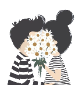

Week 11
- What was the most persuasive or convincing argument introduced this week?
- What could you relate to the most in class or in the readings this week? Why?
- Was there an argument or position taken in class or in the readings with which you strongly disagreed? Explain your reaction.
- What do you think was the most important point or central concept communicated this week?
- If you could do this week over again more successfully, what would you do differently? Why?
This week we have imitated a school website Mr. Figueroa made, by using the previous knowledge we have learn.
To imitate a school website related the most because by doing this, we can notice that do we understand the concept we just learned, such as I discovered that I don't know how to use section and footer, but I knew how to use for now.
I don't think there is any argument for this week; I think everything works well.
Imitate a school website by ourself was the most important point because, in order to finish the website, we have to clarify all the concept we have learned before, such as padding, margin…etc.
This week I had clarified a lot of concepts while I was imitated the website, so I think I would not do this week over again.
Week 12
- What was the most persuasive or convincing argument introduced this week?
- What could you relate to the most in class or in the readings this week? Why?
- Was there an argument or position taken in class or in the readings with which you strongly disagreed? Explain your reaction.
- What do you think was the most important point or central concept communicated this week?
- If you could do this week over again more successfully, what would you do differently? Why?
This week we are learning how to create a website content by using a css stylesheet.
Using CSS stylesheet to create website content related the most because we used HTML to create content before, but now we start using CSS. Which can make a website more organize also we can control content more accurately.
No, there isn't any argument just like previous weeks.
Using CSS to create website content related the most because by using CSS we can create a better/ more organize website.
I would not do this week again since I think I learned a lot of new stuff in this week.
Week 13
This section will be completed soon.
Week 14
This section will be completed soon.
Week 15
This section will be completed soon.
